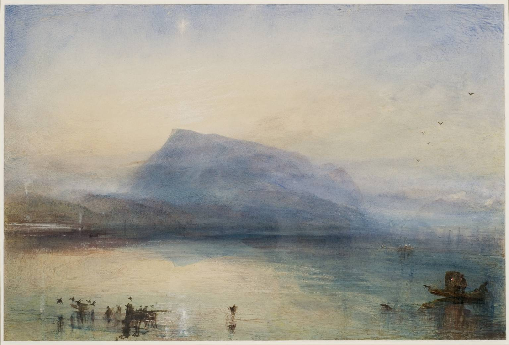

Scientific foundation models
Learning across disciplines
How can one model carry useful knowledge across different scientific problems, data structures, and ways of describing the world?
Research & a little room for wonder
Learning from context. Looking at the world.

You can view it on Wikimedia Commons ↗.
J. M. W. Turner/The Blue Rigi, Sunrise, 1842
01 / About
I’m interested in how learning systems adapt to something new.
Across scientific problems, examples, and interactions with the physical world, I’m drawn to questions of generalization: what transfers, what changes, and what can be learned from context.
02 / Connected questions
Learning across disciplines
How can one model carry useful knowledge across different scientific problems, data structures, and ways of describing the world?
Adaptation through examples
How can a few examples change what a model does, without changing its weights? What makes those examples useful?
Learning through interaction
How can learning systems build on experience, adapt to unfamiliar tasks, and improve through interaction with the physical world?
03 / Notes & observations
At the desk
A place for paper discussions, unfinished ideas, and explanations written to understand something better.
Looking closely
A place for paintings, exhibitions, and the slow practice of learning to notice.
Further afield
A place for walks, journeys, and observations from time spent away from the screen.
04 / Correspondence
For conversations about learning, scientific models, and questions that cross boundaries.